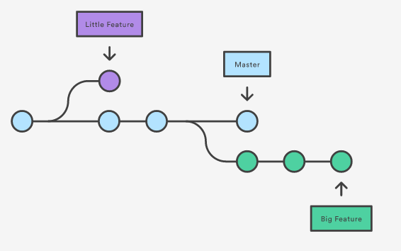
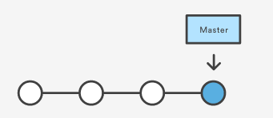
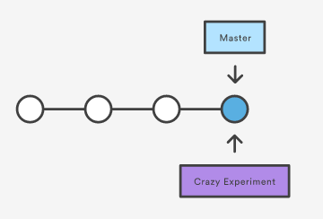
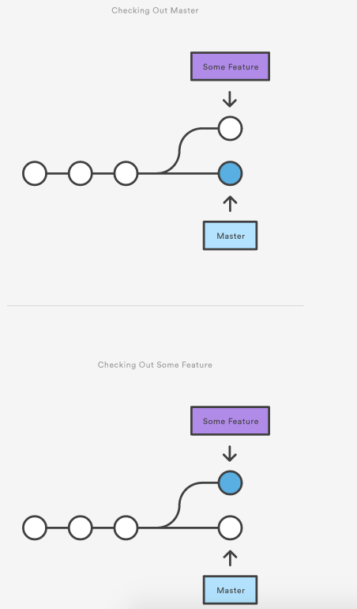
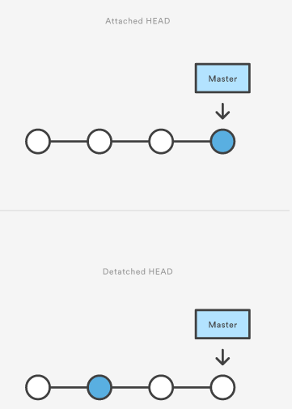
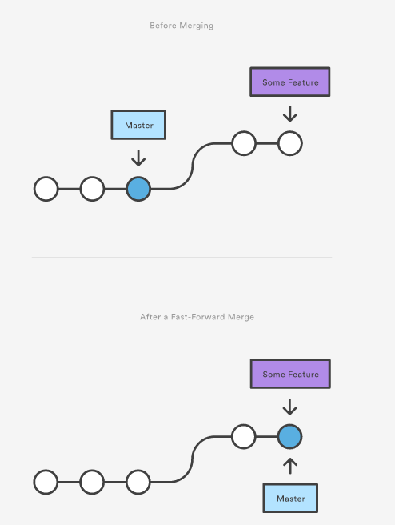
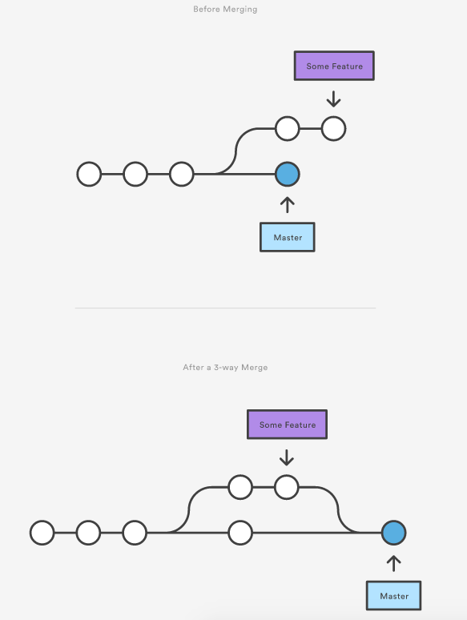

[译]使用branch
这篇文章将介绍Git分支. 首先, 看看如果创建分支, 这就像是request一个新的项目历史. 接着, 来看看git checkout是如果能被用来选择一个分支的. 最后, 学习用git merge来合并分支.
git branch
我们可以把分支看作是request一个全新的工作目录, 缓存区, 项目历史的方法. 新的commit会在当前分支的历史中被纪录下来.
git branch命令可以用来创建, 查看, 重命名, 删除分支.
用法
git branch
列出你仓储的所有的分支.
git branch <branch>
创建一个新分支. 不会自动switch到这个新分支中.
git branch -d <branch>
删除指定的分支. 这是一个安全的操作. 因为当你的分支没有被merge时, Git会阻止你删除这个分支.
git branch -D <branch>
强行删除指定的分支, 不管他有没有被merge.
git branch -m <branch>
修改你当前分支的名字为<branch>.
讨论
在Git世界里, branch是一个很通常的部分, 你可以在你开发过程中的每一天都使用他. 当你想加一个新特性或者修复一个bug－不管是大是小-你都可以开一个branch来封装你这次修改. 这能保证你不会将不稳定的代码提交到主代码中去, 还可以在merge到主branch前清理你的feature历史.

上图有两个分离的开发线, 一个是litte feature, 一个是longer-running feature. 你不止能同时开发这两个feature branch, 你还可以继续开发你的主分支, 并且保持你的主分支不受feature分支的影响.
小贴示
Git branch的实现比SVN的model更轻量级一些. 他不是把文件从一个目录拷贝到另外一个目录, Git将branch做为一个到commit的引用存储. 因此, branch代表一系列的commit--而不是一个commit的容器.
SVN的merge是基于文件的, Git基于一个抽象的commit.
例子
创建branch
这对于理解branch是指向commit的非常重要. 当你创建一个branch, Git需要做的是只是创建一个指针. 如果一开始你的仓储如下:

然后, 你使用下面的命令创建一个branch:
git branch crazy-experiment
仓储你的历史依然没有发生任何变化. 你所得到的仅仅是一个指向当前commit的指针:

注意你现在只是创建了一个branch, 还没有switch到这个新的branch下面工作. 你需要使用git checkout来选在这个新的branch, 才能切换到这个新的branch下工作.
删除branch
一旦你在一个branch中的工作完成了, 并且已经把他merge到了主branch, 你就可以删除这个branch, 而且不用担心丢失任何历史了:
git branch -d crazy-experiment
如果这个branch没有merge到主分支, 上面的命令会输出如下错误信息:
error: The branch 'crazy-experiment' is not fully merged. If you are sure you want to delete it, run 'git branch -D crazy-experiment'.
这个保护了你在未merge的时候就删除branch, 从而不小心丢失历史. 如果你真的想删除这个branch, 可以使用-D标记:
git branch -D crazy-experiment
用这个删除branch不会有任何警告.
git checkout
git checkout命令能让你导航到你想要的branch中去. checkout 一个分支, 更新工作目录的文件已匹配这个branch, 告诉git纪录这个branch中的所有的新的commit. 可以将这个看成是选择开发线(line of development)的一种方式.
在之前的文章, 我们讲过了如何使用checkout来查看老的commit. checkout branch是将你的工作目录更新到你选择的branch的状态. 新的修改都会被保存在项目历史中--这不是一个只读的操作.
用法
git checkout <existing-branch>
checkout指定的branch, 这个branch必须是已经存在了的. 这个命令会切换<existing-branch>为你的当前branch, 并更新你的工作目录为这个branch的状态.
git checkout -b <new-branch>
创建&&checkout到<new-branch>. -b标记告诉Git在git checkout <new-branch>之前先运行git branch <new-branch>
git checkout -b <new-branch> <existing-branch>
基于<existing-branch>来创建<new-branch>, 而不是基于当前branch来创建.
讨论
git checkout和git branch是一对好基友. 当你想开发一个新特性的时候, 你通过git branch来创建一个branch, 然后使用git checkout切换到这个branch下. 你可以在一个仓储中在多个branch下工作, 只要使用checkout切换到你想要的branch下就行了.

Detached HEADs
git checkout更新HEAD指向你指定的branch或commit. 当你checkout一个commit, 会转为一个detached HEAD状态.

detached状态意味着你做的所有的状态和项目发展的其它部分都是分离的. 在detached HEAD状态中开发的东西不能被merge.
你应该在一个branch下开发--永远不要在一个detached HEAD状态中开发.
例子
下面的例子演示了一个branch的基本的开发流程. 当你开发一个新特性的时候, 你首先创建一个branch然后switch到这个branch下:
git branch new-feature git checkout new-feature
然后, 你可以commit新快照了:
# Edit some files git add <file> git commit -m "Started work on a new feature" # Repeat
new-feature里面的纪录、历史都完全是和master隔离的. 当你想回到master的时候可以运行以下命令:
git checkout master
git merge
当前的branch会被更新，merge. 目标branch不会有任何影响. git merge经常是和git checkout一起配套使用的, git branch -d 用来删除目标branch.
用法
git merge <branch>
merge<branch>到当前的branch. Git会自动决定merge的算法.
git merge --on-ff <branch>
merge<branch>到当前的branch, 不同的是会生成一个merge commit（甚至他是一个fast-forward merge）.
讨论
一旦你在一个隔离的branch中开发的新特性完成了, 你将把他们merge到你的主branch中去. 基于你仓储的结构, Git有几种算法: fast-forward merge或3-way merge.
fast-forward merge

3-way merge

解决冲突
如果你在merge的时候两个branch同一文件的同一行都有修改, Git无法分辨出那一个版本是你想要的. 当这种情况出现的时候, 你得手动解决冲突然后才能merge.
当你遇到了一个merge冲突的时候, 运行git status来显示你需要处理哪些文件. 例如, 如果两个branch都修改了hello.py的同一处, 你将看到如下的信息:
# On branch master # Unmerged paths: # (use "git add/rm ..." as appropriate to mark resolution) # # both modified: hello.py #
现在你可以去hello.py文件里面选择哪个版本是你想要的. 当你准备结束这个merge, 你需要使用git add这些冲突的文件来告诉git冲突已经解决了. 然后, 你可以使用git commit生成一个merge commit.
注意了merge冲突只会出现在3-way merge这种情况. 在fast-forward merge中不可能会有冲突.
例子
fast-forward merge
# Start a new feature git checkout -b new-feature master # Edit some files git add <file> git commit -m "Start a feature" # Edit some files git add <file> git commit -m "Finish a feature" # Merge in the new-feature branch git checkout master git merge new-feature git branch -d new-feature
3-way merge
# Start a new feature git checkout -b new-feature master # Edit some files git add <file> git commit -m "Start a feature" # Edit some files git add <file> git commit -m "Finish a feature" # Develop the master branch git checkout master # Edit some files git add <file> git commit -m "Make some super-stable changes to master" # Merge in the new-feature branch git merge new-feature git branch -d new-feature